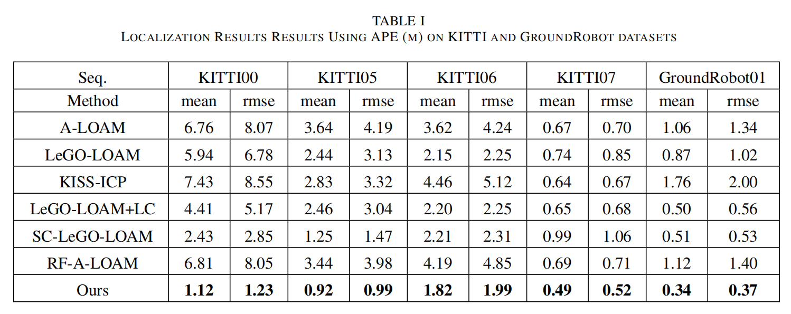
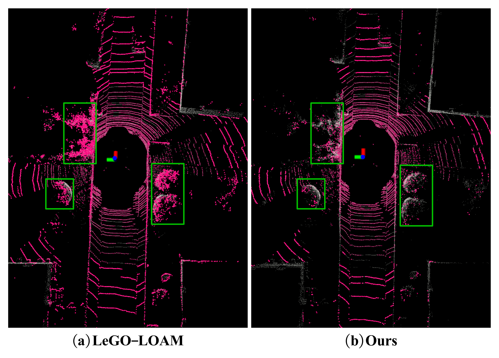
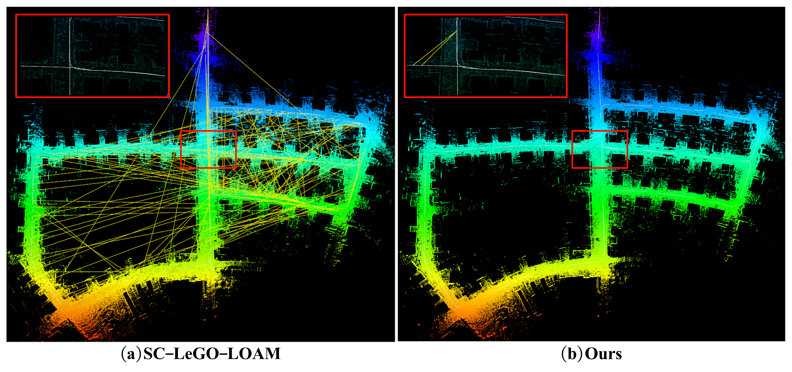
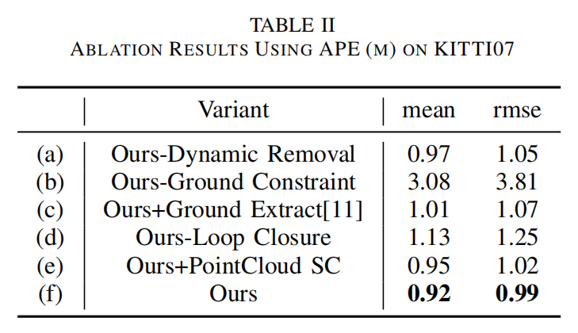

<!DOCTYPE html>
<html>
<head>
  <meta charset="utf-8">
  <meta name="description"
        content="C-LOAM: A Compact LiDAR Odometry and Mapping with Dynamic Removal">
  <meta name="keywords" content="C-LOAM: A Compact LiDAR Odometry and Mapping with Dynamic Removal">
  <meta name="viewport" content="width=device-width, initial-scale=1">
  <title>C-LOAM</title>

  <!-- Bootstrap -->
  <link rel="stylesheet" href="./web/static/css/bootstrap-4.4.1.css">

  <!-- Global site tag (gtag.js) - Google Analytics -->
  <script async src="https://www.googletagmanager.com/gtag/js?id=G-PYVRSFMDRL"></script>
  <script>
    window.dataLayer = window.dataLayer || [];

    function gtag() {
      dataLayer.push(arguments);
    }

    gtag('js', new Date());

    gtag('config', 'G-PYVRSFMDRL');
  </script>

  

  <link href="https://fonts.googleapis.com/css?family=Google+Sans|Noto+Sans|Castoro"
        rel="stylesheet">
  
  <script src="https://polyfill.io/v3/polyfill.min.js?features=es6"></script>
  <script id="MathJax-script" async src="https://cdn.jsdelivr.net/npm/mathjax@3/es5/tex-mml-chtml.js"></script>

  
  
  
  <link rel="stylesheet" href="./web/static/css/bulma.min.css">
  <link rel="stylesheet" href="./web/static/css/bulma-carousel.min.css">
  <link rel="stylesheet" href="./web/static/css/bulma-slider.min.css">
  <link rel="stylesheet" href="./web/static/css/fontawesome.all.min.css">
  <link rel="stylesheet"
        href="https://cdn.jsdelivr.net/gh/jpswalsh/academicons@1/css/academicons.min.css">
  <link rel="stylesheet" href="./web/static/css/index.css">
  <link rel="icon" href="./web/static/images/logo.webp">

  

  <script src="https://ajax.googleapis.com/ajax/libs/jquery/3.5.1/jquery.min.js"></script>
  <script defer src="./web/static/js/fontawesome.all.min.js"></script>
  <script src="./web/static/js/bulma-carousel.min.js"></script>
  <script src="./web/static/js/bulma-slider.min.js"></script>
  <script src="./web/static/js/index.js"></script>
  <script src="./web/static/js/app.js"></script>
  <script src="./web/static/js/video_comparison.js"></script>

  <link rel="stylesheet" href="./web/static/css/dics.original.css">
  <script src="./web/static/js/event_handler.js"></script>
  <script src="./web/static/js/dics.original.js"></script>
</head>
<body>


<section class="hero">
  <div class="hero-body">
    <div class="container is-max-desktop">
      <div class="columns is-centered">
        <div class="column has-text-centered">
          <h1 class="title is-1 publication-title" style="margin-bottom: 0">   <strong>C-LOAM</strong></h1>
          <br>
          <h2 class="title is-3 publication-title" style="margin-top: 0; margin-bottom: 0">A Compact LiDAR Odometry and Mapping with Dynamic Removal</h2>
          <!-- <br> -->
          <div class="icus2024" style="margin-top: 10px; margin-bottom: 20px;">
            <h2 class="title is-4">2024 7th IEEE International Conference on Unmanned Systems</h2>
          </div>
          <div class="is-size-5 publication-authors">
            <span class="author-block">
              <a href="">Meifeng Zhang</a><sup>1</sup>
            </span>&nbsp;&nbsp;&nbsp;&nbsp;
            <span class="author-block">
              <a href="https://yaepiii.github.io/">Yanpeng Jia*</a><sup>2,3</sup></span>
            </span>&nbsp;&nbsp;&nbsp;&nbsp;
            <span class="author-block">
              <a href="https://people.ucas.edu.cn/~shaoshiliang">Shiliang Shao*</a><sup>2</sup>
            </span>&nbsp;&nbsp;&nbsp;&nbsp;
            <span class="author-block">
              <a href="">Shiyi Wang</a><sup>2</sup>
            </span>
          </div>
          <!-- <br> -->
          <div class="column is-full_width">
            <h2 class="is-size-6">* corresponding author</h2>
          </div>
          <div class="is-size-5 publication-authors">
            <span class="author-block"><sup>1</sup>Baoding University</span>&nbsp;&nbsp;&nbsp;&nbsp;
            <span class="author-block"><sup>2</sup>Shenyang Institute of Automation</span>&nbsp;&nbsp;&nbsp;&nbsp;
            <span class="author-block"><sup>3</sup>University of Chinese Academy of Sciences</span>&nbsp;&nbsp;&nbsp;&nbsp;
          </div>

          <div class="column has-text-centered">
            <div class="publication-links">
              <!-- PDF Link. -->
              <span class="link-block">
                <a href="https://ieeexplore.ieee.org/abstract/document/10839822"
                   class="external-link button is-normal is-rounded is-dark">
                  <span class="icon">
                      <i class="fas fa-file-pdf"></i>
                  </span>
                  <span>Paper</span>
                </a>
              </span>
          
              <!-- Code Link. -->
              <span class="link-block">
                <a href="https://github.com/Yaepiii/C-LOAM"
                   class="external-link button is-normal is-rounded is-dark disabled">
                  <span class="icon">
                      <i class="fab fa-github"></i>
                  </span>
                  <span>Code</span>
                  </a>
              </span> 
            
              <!-- <span class="link-block">
                <a href="https://drive.google.com/drive/folders/110Hko3zPcDmY0_bnZdXxJXJKe6wr3t10?usp=sharing"
                   class="external-link button is-normal is-rounded is-dark disabled">
                  <span class="icon">
                    <i class="fas fa-database"></i>
                  </span>
                  <span>Data</span>
                  </a>
              </span>   -->
          </div>
          </div>
        </div>
      </div>
    </div>
  </div>
</section>


<!-- <section class="hero teaser">
  <div class="container is-max-desktop">
    <div class="hero-body">
      <div style="width: 70%; height: 70%; margin: 0 auto; display: flex; justify-content: center; align-items: center;">
        <video id="teaser" autoplay muted loop style="width: 100%; height: 100%;">
          <source src="web/resources/teaser_nerf-on-the-go.mp4" type="video/mp4">
        </video>
      </div> -->
      <!--  -->
      <!-- <br><br><br>
      <h2 class="subtitle has-text-centered">
        <strong style="font-size: 0.9em;">NeRF <em>On-the-go</em></strong> enables novel view synthesis in in-the-wild scenes from casually captured images.
    </h2>
    </div>
  </div>
</section> -->

<!-- <section class="hero teaser">
  <div class="container is-max-desktop">
    <div class="hero-body">
      <div class="columns is-centered has-text-centered">
        <div class="column is-full-width">
      
          <video class="video" width="80%" id="xyalias6" loop playsinline autoplay muted src="web/resources/yard_high_pj.mp4" onplay="resizeAndPlay(this)" style="height: 0px;"></video>
          <canvas height=0 class="videoMerge" id="xyalias6Merge"></canvas>
        </div>
      </div>
    </div>
  </div>
</section> -->

<!--
<section class="section">
  <div class="container is-max-desktop">

    <div class="columns is-centered has-text-centered">
      <div class="column is-full-width">
        <h2 class="title is-3">Reconstructions</h2>

        <div class="embed-responsive embed-responsive-16by9">

          <iframe style="clip-path: inset(1px 1px)" src="https://sketchfab.com/playlists/embed?collection=abee3cc1a7a7436c804f2bd3aadc2acd" allow="accelerometer; autoplay; encrypted-media; gyroscope; picture-in-picture; fullscreen" mozallowfullscreen="true" webkitallowfullscreen="true" width="100%" height="100%" frameborder="0"></iframe>
        </div>
        

      </div>
    </div>

  </div>
</section>

-->

<section class="section">
  <div class="container is-max-desktop">
    <!-- Abstract. -->
    <div class="columns is-centered has-text-centered">
      <div class="column is-four-fifths">
        <h2 class="title is-3" style="margin-top: -30px">Abstract</h2>
        <div class="content has-text-justified">
          <p>
            Real-time state estimation and mapping is a fundamental function
            of unmanned systems. In this paper, we propose
            a compact 3D Lidar odometry and mapping method (C-LOAM)
            for real-time 6-DOF pose estimation and map construction for
            unmanned ground vehicles. Our approach firstly remove dynamic
            objects from the environment by comparing differences between
            two consecutive range images. We then extract ground points
            from the range image. The remaining points are segmented in the
            range image to obtain robust feature points for the registration
            stage. After performing two-stage scan-matching, we use the extracted
            ground points to impose ground constraints and leverage
            the local feature submap for loop closure detection. By employing
            various data reuse strategies, we minimize memory consumption,
            creating a compact and accurate system. Experiments on multiple
            publicly available datasets demonstrate that our system provides
            more accurate localization and higher-quality maps compared to
            other state-of-the-art methods.
          </p>
        </div>
      </div>
    </div>
    <!--/ Abstract. -->

    <div class="columns is-centered has-text-centered">
      <div class="column is-four-fifths">
        <h2 class="title is-3">Video</h2>
        <div class="publication-video">
          <iframe src="https://www.youtube.com/embed/Dlsy9R0Twig?si=BUInoKckPkm2zaCf"
                  frameborder="0" allow="autoplay; encrypted-media" allowfullscreen></iframe>
        </div>
        <br><br><br>
        <h2 class="subtitle has-text-centered">
            <strong style="font-size: 0.9em;">C-LOAM</strong> can efficiently remove dynamic objects, generating a cleaner map, and impose ground constraint through 
          the proposed, simple, and accurate ground extraction method to refine pose estimation.
        </h2>
      </div>
    </div>

  </div>
</section>


<section class="section">
  <div class="container is-max-desktop">

    <!-- Method. -->
    <div class="columns is-centered has-text-centered">
      <div class="column is-full-width">
        <h2 class="title is-3" style="margin-top: -20px">Method</h2>

        <div style="width: 100%; margin: 0 auto; display: flex; justify-content: center;">
          
        </div>
        <div class="content has-text-justified">
          <p style="margin-top: 30px">
            The system receives the
            raw point cloud from the Lidar as input and performs a
            spherical projection to obtain a range image. This range
            image is used for dynamic removal and efficient ground
            extraction. The remaining points are then segmented, and
            robust features are extracted for scan-to-scan registration. In
            the Mapping module, we use the spatial information of key
            frames to build local feature submaps and use the pose
            obtained from odometry as a prior for scan-to-map registration.
            The ground points Gk extracted from the front-end are used to
            impose ground constraints. Simultaneously, the local feature
            submap is reused for loop detection to correct the global pose.
            Finally, the global point cloud map and pose estimation are output.
        </div>

      </div>
    </div>
    <!--/ Animation. -->

  </div>
</section>


<!-- <section class="section">
  <div class="container is-max-desktop">
    <div class="columns is-centered ">
      <div class="column is-full-width">
        <h2 class="title is-3 has-text-centered" style="margin-top: -30px"><i>On-the-go</i> Dataset</h2>
        <video class="video" controls muted autoplay loop src="web/resources/on-the-go.mp4"></video>
        <div class="content has-text-justified">
          <p>
            To rigorously evaluate our approach in real-world settings, we captured a dataset that contains 12 casually captured sequences, including 10 outdoor and 2 indoor scenes. 
            We name this dataset On-the-go dataset. This dataset features a wide range of dynamic objects including pedestrians, cyclists, strollers, toys, cars, robots, and trams, along with diverse occlusion ratios ranging from 5% to 30%.

          </p>
        </div>
        
     
    </div>

  </div>
</section> -->

<section class="section">
  <div class="container is-max-desktop">

    <div class="columns is-centered ">
      <div class="column is-full-width">
        <h2 class="title is-3 has-text-centered" style="margin-top: -30px">Localization Evaluation</h2>

        <div class="content has-text-justified">
          <p>
            Our method achieves the highest accuracy across all sequences evaluated. Among them,
            KITTI00 is an outdoor large-scale sequence with a total length of 3724m. Other methods
            exhibit significant drift that persist even with loop closure
            detection. In contrast, our approach achieves minimal drift
            of only 1.12 meters, benefiting ground constraints and a loop
            closure strategy based on local feature submap. Sequences like
            KITTI05 and KITTI07, which feature multiple dynamic vehicles posing challenges to localization, are effectively manage
            by our dynamic culling strategy. This approach successfully
            filters out dynamic effects, maintaining high accuracy in
            odometry estimation.
          </p>
        </div>
        
        <div class="hero-body">
          
        </div>

        <br>
        <br><br>
    </div>

  </div>
</section>

<section class="section">
  <div class="container is-max-desktop">

    <div class="columns is-centered ">
      <div class="column is-full-width">
        <h2 class="title is-3 has-text-centered" style="margin-top: -30px">Mapping and Loop Closure Results</h2>

        <h3 class="title is-4">Dynamic Removal</h3>
        <div class="content has-text-justified">
          <p>
            We compare the performance of
            our proposed method with LeGO-LOAM in mapping
            and dynamic object removal using the KITTI07 sequence. Our method utilizes a dynamic removal
            strategy based on range images to effectively mitigate the
            impact of dynamic objects in the environment and achieve
            clearer map construction.
          </p>
        </div>
        
        <div class="hero-body">
          
        </div>

        <h3 class="title is-4">Ground Extraction</h3>
        <div class="content has-text-justified">
          <p>
            We demonstrate the benefits of our
            enhanced ground extraction method using the KITTI05 sequence. It is evident that LeGO-LOAM
            exhibits numerous false positives during ground extraction,
            whereas our proposed method effectively mitigates this issue
            and obtains more accurate ground points. This improvement
            forms a crucial foundation for registration and ground constraint application.
          </p>
        </div>
        
        <div class="hero-body">
          
        </div>

        <h3 class="title is-4">Loop Closure Detection</h3>
        <div class="content has-text-justified">
          <p>
            SCLeGO-LOAM produces a large number of false detections,
            whereas our method ensures robust detection results. The local
            magnification figure shows SC-LeGO-LOAM results using
            the same parameters as our method. While using the same
            parameters reduces the number of false detections for SC-LeGO-LOAM, it also diminishes its ability to detect correct
            loops. Our method, benefiting from the large-scale properties
            of submap and the robustness of extracted features, effectively
            detects the correct loops.
          </p>
        </div>
        
        <div class="hero-body">
          
        </div>

        <br>
        <br><br>
    </div>

  </div>
</section>

<section class="section">
  <div class="container is-max-desktop">

    <div class="columns is-centered ">
      <div class="column is-full-width">
        <h2 class="title is-3 has-text-centered" style="margin-top: -30px">Ablation Study</h2>

        <div class="content has-text-justified">
          <p>
            <strong style="font-size: 0.9em;">Dynamic Removal</strong>:
            The comparisons between (a) and (f)
            demonstrate that the dynamic removal strategy enhances registration consistency, thereby improving localization accuracy.
            However, this does not bring much improvement, we analyze the reason is that KITI05 does not have too many dynamic
            objects, and the loop detection can correct for historical errors.
          </p>
          <p>
            <strong style="font-size: 0.9em;">Ground Extraction</strong>:
            From the comparisons between (b), (c), and (f), it is evident
            that applying ground constraints effectively suppresses drift,
            leading to a significant improvement in positioning accuracy.
            Additionally, our method enables more accurate ground point
            extraction compared to LeGO-LOAM ground extraction
            method.
          </p>
          <p>
            <strong style="font-size: 0.9em;">Loop Closure Detection</strong>:
            Interestingly, comparisons between (d), (e), and (f) reveal
            that our method achieves promising accuracy even without
            loop detection. Furthermore, loopback detection descriptors
            using local feature subgraphs are more effective and competitive than those using raw point clouds.
          </p>
        </div>
        
        <div class="hero-body">
          
        </div>

        <br>
        <br><br>
    </div>

  </div>
</section>

<!-- <section class="section">
  <div class="container is-max-desktop">

    <div class="columns is-centered ">
      <div class="column is-full-width">
        <h2 class="title is-3 has-text-centered" style="margin-top: -30px">Additional Results</h2>

        <h3 class="title is-4">Comparison with RobustNeRF</h3>
        <div class="content has-text-justified">
          <p>
            RobustNeRF employs hard thresholding to eliminate distractors, which makes it sensitive to the threshold value and may not generalize effectively in complex scenes.
            Our method is more robust to the distractors and can handle more complicated scenes.

          </p>
        </div>
        
        <div class="content has-text-centered" style="width: 80%; display: flex; justify-content: center; align-items: center">
          <video class="video" width="100%" id="xyalias1" loop playsinline autoplay muted src="web/resources/bellevue_pj.mp4" onplay="resizeAndPlay(this)" style="height: 0px;"></video>
          <canvas height=0 class="videoMerge" id="xyalias1Merge" style="width: 80%;"></canvas>
        </div>
        
        <div class="content has-text-centered" style="width: 80%; display: flex; justify-content: center; align-items: center">
          <video class="video" width="100%" id="xyalias2" loop playsinline autoplay muted src="web/resources/rigi_pj.mp4" onplay="resizeAndPlay(this)" style="height: 0px;"></video>
          <canvas height=0 class="videoMerge" id="xyalias2Merge" style="width: 80%;"></canvas>
        </div>
        

        <h3 class="title is-4">Comparison with NeRF-W</h3>
        <div class="content has-text-justified">
          <p>
            Compare with NeRF-W, our method can handle more complicated scenes with higher occlusion ratio. 
            Furthermore, it does not depend on transient embedding, which adds extra complexity and can potentially result in the loss of high-frequency details.
          </p>
        </div>

        <div class="content has-text-centered" style="width: 80%; display: flex; justify-content: center; align-items: center">
          <video class="video" width="100%" id="xyalias9" loop playsinline autoplay muted src="web/resources/bahnhof_pj.mp4" onplay="resizeAndPlay(this)" style="height: 0px;"></video>
          <canvas height=0 class="videoMerge" id="xyalias9Merge" style="width: 80%;"></canvas>
        </div>
        <div class="content has-text-centered" style="width: 80%; display: flex; justify-content: center; align-items: center">
          <video class="video" width="100%" id="xyalias10" loop playsinline autoplay muted src="web/resources/polybahn_pj.mp4" onplay="resizeAndPlay(this)" style="height: 0px;"></video>
          <canvas height=0 class="videoMerge" id="xyalias10Merge" style="width: 80%;"></canvas>
        </div>

        <div class="content has-text-justified">
          <p>
            Here, we show more comparisons with NeRF-W and RobustNeRF. 
          </p>
        </div>

        <div class="container">
          <ul class="nav nav-tabs nav-fill nav-justified" id="object-scale-recon">
              <li class="nav-item">
                <a class="nav-link active" onclick="objectSceneEvent(0)">station</a>
              </li>
              <li class="nav-item">
                <a class="nav-link" onclick="objectSceneEvent(1)">patio-high</a>
              </li>
              <li class="nav-item">
                <a class="nav-link" onclick="objectSceneEvent(2)">arc de triomphe</a>
              </li>
              <li class="nav-item">
                <a class="nav-link" onclick="objectSceneEvent(3)">drone</a>
              </li>
              <li class="nav-item">
                <a class="nav-link" onclick="objectSceneEvent(4)">tree</a>
              </li>
              <li class="nav-item">
                <a class="nav-link" onclick="objectSceneEvent(5)">mountain</a>
              </li>
              <li class="nav-item">
                <a class="nav-link" onclick="objectSceneEvent(6)">spot</a>
              </li>
              <li class="nav-item">
                <a class="nav-link" onclick="objectSceneEvent(7)">corner</a>
              </li>
          </ul>
          <div class="b-dics">
              
              
              
              
          </div>
        </div>

        <br>
        <br><br>
    </div>

  </div>
</section> -->

<!-- <section class="section" id="BibTeX">
  <div class="container is-max-desktop content">
    <h2 class="title">BibTeX</h2>
    <pre><code>@InProceedings{Ren2024NeRF,
    title={NeRF On-the-go: Exploiting Uncertainty for Distractor-free NeRFs in the Wild},
    author={Ren, Weining and Zhu, Zihan and Sun, Boyang and Chen, Jiaqi and Pollefeys, Marc and Peng, Songyou},
    booktitle={IEEE/CVF Conference on Computer Vision and Pattern Recognition (CVPR)},
    year={2024},
}</code></pre>
  </div>
</section> -->

<!-- <section class="section" id="Acknowledgements">
  <div class="container is-max-desktop content">
    <h2 class="title">Acknowledgements</h2>
    We thank the Max Planck ETH Center for Learning Systems (CLS) for supporting Songyou Peng. 
We also thank Yiming Zhao and Clément Jambon for helpful discussions.
  </div>
</section> -->

<!-- <section class="section" id="References">
  <div class="container is-max-desktop content">

        <h3 class="title is-4">References</h3>
        <div class="content has-text-justified">
          <ul>
            <li>
              <a href="https://robustnerf.github.io/" target="_blank">RobustNeRF: Ignoring Distractors with Robust Losses</a>
            </li>
            <li>
              <a href="https://nerf-w.github.io/" target="_blank">NeRF in the Wild: Neural Radiance Fields for Unconstrained Photo Collections</a>
            </li>
          </ul>
        </div>
      </div>
</section> -->


<footer class="footer">
  <div class="container">
    <div class="content has-text-centered">
    </div>
    <div class="columns is-centered">
      <div class="column is-8">
        <div class="content">
          <p>
            This website is licensed under a <a rel="license" href="http://creativecommons.org/licenses/by-sa/4.0/">Creative
            Commons Attribution-ShareAlike 4.0 International License</a>.
            This webpage template is from <a href="https://github.com/autonomousvision/mip-splatting">mip-splatting</a>, which is built upon <a href="https://github.com/nerfies/nerfies.github.io">Nerfies</a>. 
            We sincerely thank <a href="https://keunhong.com/">Keunhong Park</a> for developing and open-sourcing this template.  
          </p>
        </div>
      </div>
          <p></p>
        </div>
      </div>
</footer>

</body>
</html>
